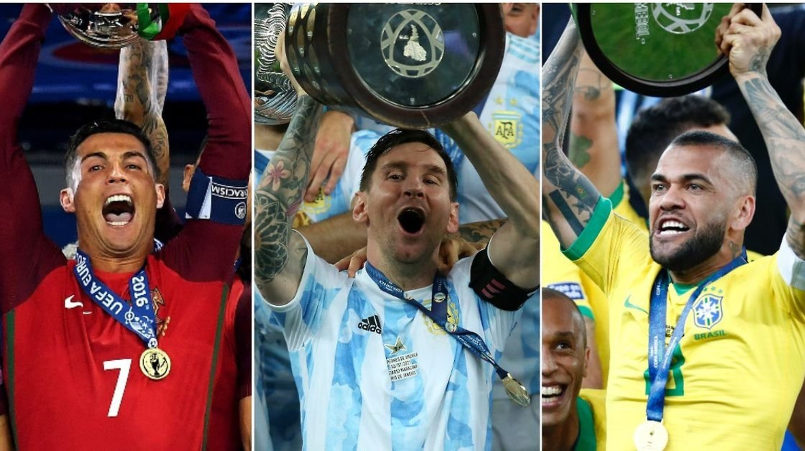

Nymer Jr
Neymar, in full Neymar da Silva Santos, Jr., (born February 5, 1992, Mogi das Cruzes, Brazil), Brazilian football (soccer) player who was one of the most prolific scorers in his country’s storied football history.

Lionel Messi
Lionel Messi, in full Lionel Andrés Messi, also called Leo Messi, (born June 24, 1987, Rosario, Argentina), Argentine-born football (soccer) player who was named FIFA world player of the year five times

Cristiano Ronaldo
Cristiano Ronaldo, in full Cristiano Ronaldo dos Santos Aveiro, (born February 5, 1985, Funchal, Madeira, Portugal), Portuguese football (soccer) forward who was one of the greatest players of his generation.

Paulo Dybala
Paulo Dybala is a Argentinian footballer who currently plays for the Italian club, Juventus. The attacking forward was born in the city of Laguna Larga, Argentina on 15 November 1993.

Mesut Ozil
Known for his technical skills and versatility as an attacking midfielder, Mesut Ozil is a German professional footballer who was born on 15th October 1988 in Gelsenkirchen, West Germany.

Mauro Icardi
Mauro Emanuel Icardi is an Argentine professional football player. He was born on 19 February 1993 in Rosario, Argentina. He mainly plays the role of a striker, currently for the club Inter Milan.

Di Maria
Angel di Maria is an Argentinian footballer, born on 14th February 1988 in Rosario, Argentina. Di Maria is primarily a right winger but is also equally adept in the role of a left winger.

Kylian Mbappé
Kylian Mbappé Lottin is a French professional footballer. He plays forward for PSG and the France national team. At the age of 19, he marked the best young player in the world.

Mohamed Salah
Mohamed Salah is one of the most prolific forwards in European football and a Champions League and PL winner with Liverpool.The Egyptian has been unstoppable scorer since summer of 2017.

Harry Kane
Harry Edward Kane MBE (born 28 July 1993) is an English professional footballer who plays as a striker for Premier League club Tottenham Hotspur and captains the England national team.

Kevin De Bruyne
Kevin De Bruyne is a Belgian professional football player who currently plays for Manchester City and the Belgian national team. He was born on 28 June 1991 in Drongen, Ghent, Belgium.

Philippe Coutinho
Philippe Coutinho Correia (born 12 June 1992) is a Brazilian professional footballer who plays as an attacking midfielder or winger for Spanish club Barcelona and the Brazil national team.
All Highlights
Copa America 2021
Amet minim mollit non deserunt ullamco est sit aliqua dolor do amet sint. Velit officia consequat duis enim velit mollit. Exercitation veniam consequat sunt nostrud amet.
Watch NOW
Through the lens
Goals, behind the scenes, interviews and more
Top News
Editor on duty: Jalal Chowdhury,Sylhet.

Messi, Ronaldo, Zlatan: Which player has the most titles in the 21st century?
Lionel Messi won his first major trophy with Argentina last Saturday night. The Barcelona superstar's country secured a 1-0 victory over Brazil in the final of the 2021 Copa America thanks to a first half goal from Angel Di Maria. It was an emotional evening for Messi and his beloved country, as it brought an end to their dismal run in finals of major .... See more